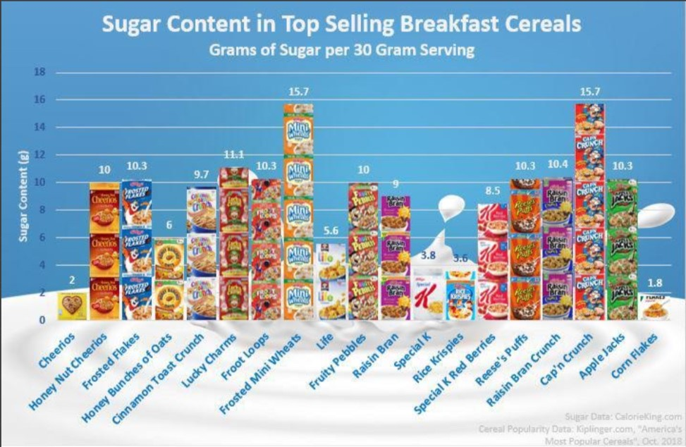

So why do you feel this way?
As we know Sugary foods rush to the blood stream and causes glucose spikes and
one of the worse times to consume sugar is in the morning. In the morning our stomaatchs
are empty; anything you consume with go directly into your blood stream!
Many foods and drinks will easily have our blood sugar over the top. Breakfast meals such as:

- Fruit juices; even tho fruit is a natural sugar, it is still a sugar!
- Cereal like Cap'n Crunch and Mini Wheats; now this is a given. Cereal
- Pastries and baked goods ;
- Coffe drinks;
may leave you spiked out.
Wow, Breakfast may be the most important meal of the day aterall.